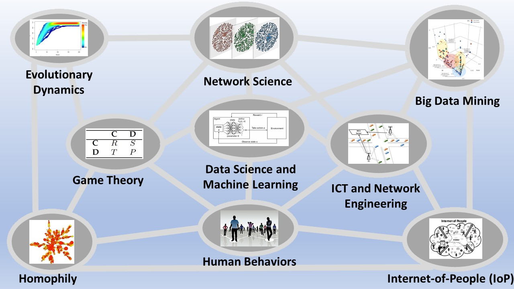

Lecturer (Assistant Professor)
Teesside University, Middlesbrough, UK
I am a lecturer in Computer Science at the School of Computing, Engineering & Digital Technologies, Teesside University, Middlesbrough, UK.
I was born in Catania, Sicily, Italy in 1985. I received my BSc (2009) and MSc degrees (2012) in Telecommunications Engineering from the Department of Electrical, Electronic and Computer Engineering (DIEEI) at University of Catania, Italy, and the PhD in Systems Engineering from the same University, in 2015.
After my PhD, I worked as postdoctoral researcher at DIEEI, University of Catamia, for almost four years, and then as a research associate and teaching assistant at the Department of Engineering, King’s College London (KCL), London, UK, supervised by Prof. Nishanth Sastry. Recently, I worked as a research associate at Computer Laboratory, Department of Computer Science and Technology, University of Cambridge, UK, supervised by Prof. Pietro Liò, with whom I have been collaborating since 2012.
I am an IEEE member and part of the IEEE Professional Communication Society and the Technical Committee on Computational Life Sciences (TCCLS), and also member of the Complex Systems Society (CSS).
Apart from my passion for doing research, I like sport in general, in particular I love playing football, swimming and running and I also like listening to music, reading books and travelling.
I have an interdisciplinary approach to research which incorporates engineering and computer science methodologies applied to socio-technological systems. Below you find my main research interests:
More recently, I have been also focusing on methodologies bringing together network science, game theory and machine learning.
Details of my publications can be found on my Google Scholar profile (Google Scholar) or my Publications page (Publications).

1. Di Stefano, A., Scatà, M., Attanasio, B., La Corte, A., Liò, P., & Das, S. K. (2020). A Novel Methodology for designing Policies in Mobile Crowdsensing Systems, Pervasive and Mobile Computing, Vol. 67, 2020, 101230, ISSN 1574-1192, https://doi.org/10.1016/j.pmcj.2020.101230 - preprint version: arXiv:2001.06437.
2. Di Stefano, A., Scatà, M., Vijayakumar, S., Angione, C., La Corte, A., & Liò, P. (2019). Social dynamics modeling of chrono-nutrition. PLoS computational biology, 15(1), e1006714. https://journals.plos.org/ploscompbiol/article?id=10.1371/journal.pcbi.1006714.
3. Scatà, M., Di Stefano, A., La Corte, A., & Liò, P. (2018). Quantifying the propagation of distress and mental disorders in social networks. Scientific reports, 8(1), 1-12. https://www.nature.com/articles/s41598-018-23260-2 - Featured in "Le Scienze -Scientific American" https://www.lescienze.it/pubblicazioni/2018/03/22/news.
4. Scatà, M., Di Stefano, A., Liò, P., & La Corte, A. (2016). The impact of heterogeneity and awareness in modeling epidemic spreading on multiplex networks. Scientific reports, 6, 37105. https://www.nature.com/articles/srep37105.
5. Scatà, M., Di Stefano, A., La Corte, A., Liò, P., Catania, E., Guardo, E., & Pagano, S. (2016). Combining evolutionary game theory and network theory to analyze human cooperation patterns. Chaos, solitons & fractals, 91, 17-2. https://www.sciencedirect.com/science/article/pii/S0960077916301497.
6. Di Stefano, A., Scatà, M., La Corte, A., Liò, P., Catania, E., Guardo, E., & Pagano, S. (2015). Quantifying the role of homophily in human cooperation using multiplex evolutionary game theory. PloS one, 10(10), e0140646. https://journals.plos.org/plosone/article?id=10.1371/journal.pone.0140646 - Featured in “Le Scienze - Scientific American”, https://www.lescienze.it/pubblicazioni/2015/10/23/news.